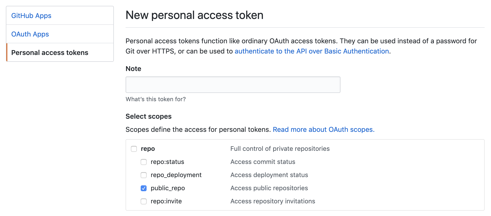
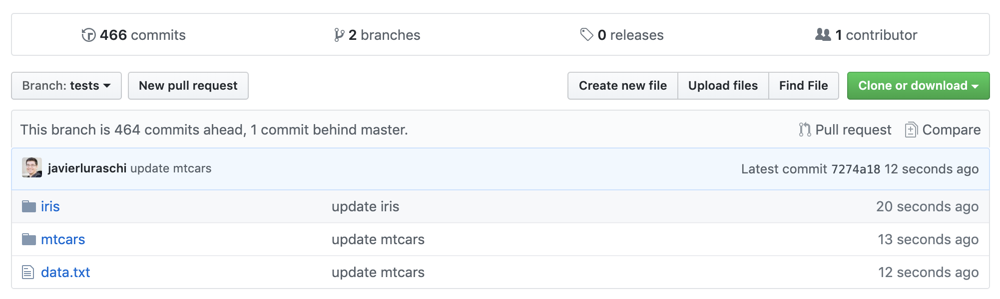
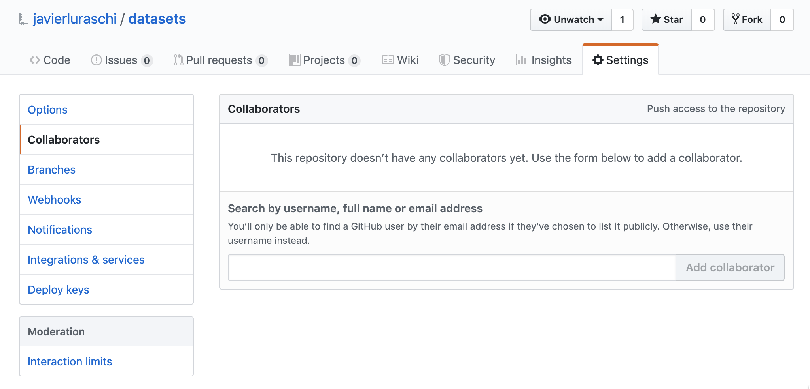

Registering
In order to use GitHub as a board, you should first authenticate. If you are familiar with GitHub and is already part of your workflow, is likely that you’ll have a GITHUB_PAT environment variable already configured. You can check if GitHub is already configured by running:
If the above statement is TRUE, this means GitHub is already configured, which means you can register an existing GitHub board as follows. However, when using a new repo, first manually create an empty repo from github.com/new.
Usually, you will want to set owner to be your GitHub username or an organization name you belong to, learn more About Repositories in the GitHub docs.
Notice that board_register_github() is just an alias with named parameters to board_register(); the previous code is equivalent to:
Alternatively, you can create a GitHub token at github.com/settings/tokens/new with the required permissions to access your repo. For public repos, you only need the public_repo scope:

Once the token is created, you can register your GitHub board through:
This completes the board registration process, you can now focus on using and sharing pins in GitHub.
Pinning
Let’s start by creating to pins for iris and mtcars under the GitHub board,
pin(iris, description = "The iris data set", board = "github")
pin(mtcars, description = "The motor trend cars data set", board = "github")Notice then the structure in the GitHub repo. Similar to the folder structure in the local board, a folder is created for each pin and a data.txt index added to the repo.

You can also retrieve pins back from this repo using the now familiar pin_get() function,
# A tibble: 150 x 5
Sepal.Length Sepal.Width Petal.Length Petal.Width Species
<dbl> <dbl> <dbl> <dbl> <fct>
1 5.1 3.5 1.4 0.2 setosa
2 4.9 3 1.4 0.2 setosa
3 4.7 3.2 1.3 0.2 setosa
4 4.6 3.1 1.5 0.2 setosa
5 5 3.6 1.4 0.2 setosa
6 5.4 3.9 1.7 0.4 setosa
7 4.6 3.4 1.4 0.3 setosa
8 5 3.4 1.5 0.2 setosa
9 4.4 2.9 1.4 0.2 setosa
10 4.9 3.1 1.5 0.1 setosa
# … with 140 more rowsDiscovering
You can then search pins in your repo using pin_find(), which by default search all boards but you can also explicitly request to use this particular GitHub board:
# A tibble: 1 x 4
name description type board
<chr> <chr> <chr> <chr>
1 mtcars The motor trend cars data set table githubGitHub boards contain extended fields that go beyond the fields pins requires, to retrieve all the additional fields use extended = TRUE:
# A tibble: 2 x 7
name description type path rows cols board
<chr> <chr> <chr> <chr> <int> <int> <chr>
1 iris The iris data set table iris 150 5 github
2 mtcars The motor trend cars data set table mtcars 32 11 githubOr pin_info() to retrieve all the information associated with a particular pin,
# Source: github<mtcars> [table]
# Description: The motor trend cars data set
# Extended:
# - path: data.csv, data.rds
# - rows: 32
# - cols: 11
# - columns:
# - mpg: numeric
# - cyl: numeric
# - disp: numeric
# - hp: numeric
# - drat: numeric
# - wt: numeric
# - qsec: numeric
# - vs: numeric
# - am: numeric
# - gear: numeric
# - carb: numericNotice that the given ‘motor’ search keyword is searched in the name and description fields for the pins available in this repo.
Sharing
When working in teams, you might want to share your pins with others. For GitHub boards, this is accomplished by adding collaborators through the GitHub website.

Once your collaborators gain access to the repo, they can follow the same steps to register the same GitHub board to allow them to upload and download pins with ease.
Large Files
A GitHub repo only supports files under 25MB in size (100MB in theory but there is additional overhead when using the GitHub API). To store large files, GitHub recommends storing them using GitHub Releases which support up to 2GB files.
Therefore, to support large files, pins makes use of GitHub release files. When you upload a file over , pins will create a new GitHub release file for that particular pin. Everything else works as expected, you can still retrieve the large resource with pin_get() and find it with pin_find(). The only noticeable change is new releases being created in your repo:

You can configure the 25MB check to use release files with the pins.github.release option.